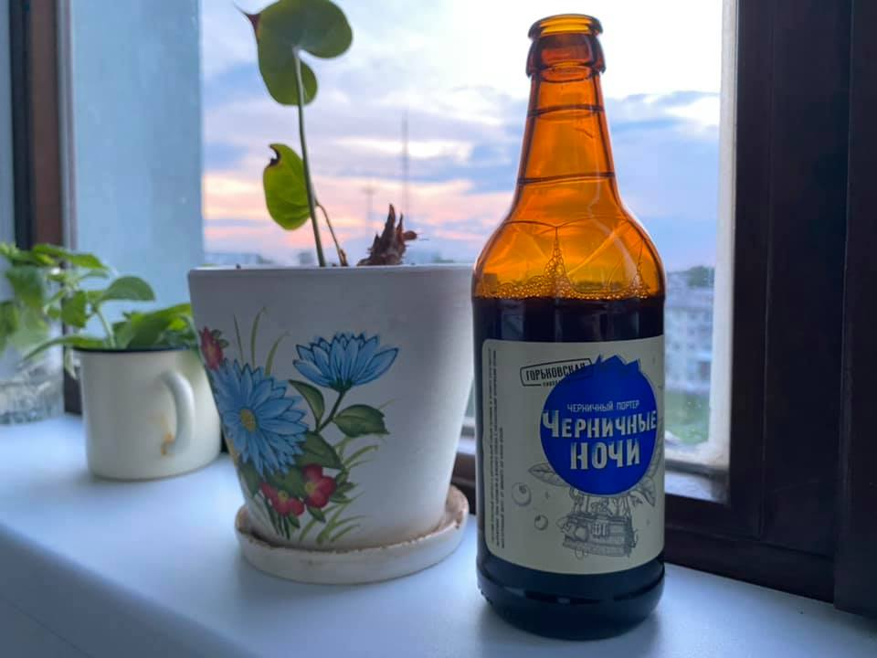

В фильме «Завтрак у Тиффани» Одри Хепбёрн, сидя на подоконнике, поёт романтическую балладу про Лунную реку, что wider than a mile.
В песне есть выражение my huckleberry friend. То есть, в буквальном переводе, «мой черничный друг».
Выражение принято переводить как «закадычный друг» и любопытно, что распространение оно получило после именно этой песни. В песню же оно попало, вероятно, от фамилии лучшего друга Тома Сойера, Finn Huckleberry, которого в русской культуре называют Гекельберифином.
А портер весьма достоен.